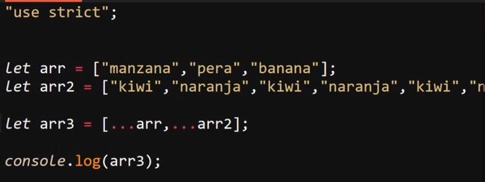

Operador Condicional (Ternario) y Operador Spread
Operador Condicional (Ternario)
Se trata de un tipo especial de operador, su función consiste en ser una alternativa a al condicional "if", literalmente cumple la misma función que este con la diferencia requerir con una menor cantidad recursos del navegador, por lo tanto en la mayoria de los casos se puede considerar más optimo el operador "ternario" que un condicional "if".
La estructura de este operador se asemeja a la del "if", sin embargo a su ves posee grandes diferencias, la cuales radican en que:
-
El operador ternario "?" se ubica despues de la condición impuesta (esta de igual forma se encierra en parentesis ( ) ) y no antes como en el caso del "if"
-
Los bloques de codigo del "if" y el "else" son separados por bloques limitados por parentesis, indicados por el operador ternario "?" para el bloque a ejecutar en caso de que se cumpla la condición y " : " indicando el bloque que se ejecutara en caso de que la condición no se cumpla
La estructura se puede simplificar en caso de que cada bloque posea una unica expresión, esto se hace definiendo cada expresión directamente despues de los operadores sin el uso de los parentesis para delimitar el bloque (de igual modo el ":" se define en una linea diferente del "?")
Ejemplo de If

Ejemplo de operador ternario con sintaxis reducida
Ejemplo de If Extenso
Ejemplo de operador ternario con bloques definidos
Operador Spread
Se trata de un operador particular para los arrays, su sintaxis es muy simple consiste en tres punyos consecutivos antes del nombre array en cuestión, este operador permite acceder a todos los datos almacenados en el array a la ves, los cual se puede emplear de varias maneras:
-
Permite destructurar el array sin necesidad de trabajar con la destructuración:
A continuación se muestra un ejemplo en el que se usa el operador "spread" para para obtener los datos de un array
Ejemplo
Resultado
-
Permite añadir los datos de un array dentro de otro sin necedad de utilizar los indices de cada datos, es decir con usar este operador se puede acceder a todos los datos a la vez y ingresarlos en otro array de la siguite forma
Ejemplo
Resultado
-
Permite concatenar arrays, es decir permite obtener los datos de uno o más arrays para guardarlo en una nueva variable:
Ejemplo

Resultado
-
Permite pasar los datos de un array como argumentos a una función sin necesidad de de recurrir al indice de los datos
Ejemplo
Resultado